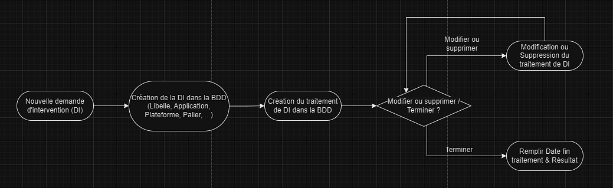

Stage Professionnel BTS-SIO SLAM 2ème année
> La DGFIP (Direction Générale des Finances Publiques)
- Categorie: Web - BackEnd
- Date du stage: 08/01/24 - 09/02/24
- Nom de l'organisme: DGFIP
- Adresse : 7 Allée Simone de Beauvoir, 77186 Noisiel, FR
- Forme juridique: Service central d’un ministère
- Taille: ~100.000 (2020)
- Secteur d'activité: Gestion des finances publiques
- Site: https://www.economie.gouv.fr/dgfip
- Languages et outils utilisés:
Contexte :
La Direction Générale des Finances Publiques (DGFIP) incarne le pilier financier du gouvernement français, relevant du ministère de l'Économie, des Finances et de la Relance. Son rôle central s'articule autour de la gestion méticuleuse des finances publiques, englobant la collecte des impôts et taxes, la supervision des comptes publics, ainsi que le recouvrement des créances de l'État. En plus de sa responsabilité cruciale dans la mise en œuvre des politiques fiscales définies par le gouvernement, la DGFIP veille avec détermination à la lutte contre la fraude fiscale et à l'application rigoureuse des règles fiscales. Elle joue également un rôle proactif en facilitant les démarches administratives des contribuables et des collectivités locales à travers des services en ligne. En tant qu'architecte financier, la DGFIP contribue de manière significative à la stabilité financière et à l'équilibre budgétaire de la France, soutenant ainsi la pérennité du bien-être économique du pays.
Le workflow :
Mes objectifs de stage :
- Création de la BDD :
-
Mise en place d'un MCD / UML en respectant les contraintes du cahier des charges.
-
Génération du script SQL par l'application BOUML.
-
Remplissage des tables de la BDD.
-
-
Réalisation d'une application web (CMS) pour le suivi de demandes d'intervention :
Le résultat attendu : Cette application a pour but un suivi des demandes d'intervention simplifié pour les utilisateurs qui mettent à jour les applications du service.
L'interface de l'application a une apparence intuitive qui permet de guider l’utilisateur dans le suivi d'une DI. Elle se divise en 3 parties :- « Demande d'intervention (DI) » pour la gestion des DIs (visualisation / création / modification / suppression).
- « Traitement de DI » pour la gestion des traitements de DI (visualisation / création / modification / suppression).
- « Admin » pour la gestion des caractéristiques d'une DI (plateforme, application, zone, etc).
Ce stage de six semaines m'a permis de découvrir le monde professionnel dans mon domaine : l'informatique. J'ai pu mettre en application des notions de programmation apprises en cours et d'autres en entreprise. Cette expérience m'a confortée dans mon projet professionnel orienté vers le développement.
> La DGFIP (Direction Générale des Finances Publiques)
- Categorie: Web - Front & BackEnd
- Date du stage: 08/01/24 - 09/02/24
- Nom de l'organisme: DGFIP
- Adresse : 7 Allée Simone de Beauvoir, 77186 Noisiel, FR
- Forme juridique: Service central d’un ministère
- Taille: ~100.000 (2020)
- Secteur d'activité: Gestion des finances publiques
- Site: https://www.economie.gouv.fr/dgfip
- Languages et outils utilisée: